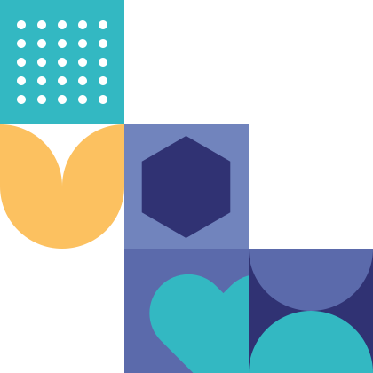

Deja de pasar horas planeando, empieza a enseñar
Conlú te da la planeación integral de todo el ciclo escolar, con materiales listos para usar y enfoque en las 12 inteligencias. Para que recuperes tus tardes y tu energía.



No es que no sepas enseñar, es que nadie te dio el tiempo para planear bien
El día a día que apaga tu vocación
- La carga administrativa que nunca termina.
- La falta de apoyo de la coordinación.
- La presión de las familias y los grupos numerosos.
- La sensación de que nunca haces suficiente.
- Sentir que resuelves todo sola, sin respaldo.
Volver a disfrutar por qué elegiste enseñar
- Reconectar y disfrutar tu vocación otra vez.
- Sentirte segura de tu práctica en el aula.
- Vínculos reales con tus estudiantes y sus familias.
- Terminar el día con la satisfacción de hacer una diferencia.
- Cuidar a los demás sin dejar de cuidarte a ti.
No necesitas esforzarte más. Necesitas herramientas, respaldo y una comunidad que crea en ti.
Horas perdidas cada semana
Domingos, noches, fines de semana completos buscando, adaptando y armando material desde cero.
Recursos dispersos y desconectados
Pinterest, grupos de Facebook, fotocopias de otros años. Nada conectado a una planeación real de desarrollo.
Agotamiento que no se ve
Das todo en el aula y llegas a casa sin energía para ti misma. El burnout docente es real y casi nunca se nombra.
De sobrevivir cada jornada a enseñar con propósito, seguridad y bienestar.
Conlú Docentes no te pide dar más de lo que ya das. Te devuelve el sentido de tu vocación con una metodología práctica, acompañamiento real y una red que te recuerda que todavía es posible educar con amor — sin dejar de cuidarte a ti misma.
Cada secuencia trabaja las 12 inteligencias de tus alumnos
No como anexo — como columna vertebral de la planeación, basada en la Metodología Flor-Es-Ser®.
No es solo un programa,
es tu tiempo de vuelta ✨
6+ hrs
RECUPERADAS POR SEMANA
Tiempo promedio que las docentes dejan de invertir en planear desde cero
100%
CICLO ESCOLAR CUBIERTO
Planeación lista desde el primer día hasta el cierre de ciclo
12
INTELIGENCIAS INTEGRADAS
En cada secuencia, no como anexo — como base de la planeación
Todo lo que necesitas
para enseñar
Nada de lo que te
quita tiempo
Planeación por bimestre
Secuencias didácticas completas organizadas por bimestre y grado, listas para adaptar a tu grupo específico.
CICLO COMPLETOMateriales imprimibles
Fichas de trabajo, rúbricas de evaluación y recursos visuales listos para imprimir. Sin diseñar desde cero.
DESCARGABLESEnfoque en desarrollo humano
Cada actividad conecta contenido académico con regulación emocional, vínculo y las 12 inteligencias.
METODOLOGÍA FES®Rúbricas de evaluación
Instrumentos de evaluación ya diseñados y alineados a cada secuencia. Evalúa sin improvisar el viernes en la noche.
EVALUACIÓN LISTAComunidad de docentes
Espacio privado para compartir experiencias, resolver dudas y adaptar la planeación con otras educadoras que la usan.
COMUNIDAD ACTIVAActualizaciones del ciclo
Acceso a ajustes y nuevos materiales durante todo el año escolar, sin costo adicional dentro de tu período de acceso.
INCLUIDOEmpezar es simple.
Elige tu plan
Según dónde estás hoy: primeras herramientas, formación completa o certificación.
Aplica en tu aula
Recursos prácticos listos para usar y acompañamiento paso a paso.
Crece en comunidad
Comparte, resuelve dudas y avanza junto a una red de docentes como tú.
Aquí ya no enseñas sola.
Formar parte de Conlú es pertenecer a una comunidad de docentes que comparten herramientas, experiencias y una misma forma de educar. Aquí te sientes comprendida — sin tener que justificar por qué quieres enseñar diferente.
- Una comunidad que valida tu forma de educar.
- Personas que creen en ti y en tu vocación.
- Acompañamiento para que no cargues todo sola.

Un plan para cada momento de tu carrera docente.
Los tres incluyen el bono Florecer Desde Adentro y acceso a la comunidad de docentes Conlú.
Precio del ciclo completo confirmado ($497 USD). Semilla y Raíces: precios sugeridos — por confirmar.
Semilla
"Quiero probar la metodología antes de comprometerme."
Precio regular $47 USDUna probada real de cómo se siente enseñar con la metodología.
- Calentamientos y cierres para tus clases
- 1 semana de planeación lista para aplicar
- Guía rápida de inicio
Incluye Florecer Desde Adentro con Marié — para cuidarte mientras cuidas a tus estudiantes.
Raíces
"Quiero un bimestre completo y probarlo a fondo."
Precio regular $197 USDUn bimestre entero para echar raíces en tu práctica, con estructura y seguimiento.
- Todo lo de Semilla
- Planeación completa de un bimestre
- Tablas de desarrollo por etapa
- Calentamientos y cierres del bimestre
Incluye Florecer Desde Adentro con Marié — bienestar docente que se nota en el aula.
Florece
"Quiero acompañar todo el ciclo escolar."
Precio regular $697 USDTodo el ciclo escolar resuelto: planeación, desarrollo y acompañamiento de principio a fin.
- Todo lo de Raíces
- Planeación completa del ciclo escolar
- Tablas de desarrollo de todo el año
- Recursos y materiales para cada etapa
- Acompañamiento y comunidad todo el ciclo
Incluye Florecer Desde Adentro completo con Marié — tu bienestar durante todo el año.
No es solo planeación, es volver a disfrutar enseñar
"Llevábamos 3 años buscando una metodología que realmente funcionara para nuestro contexto. SELÚ fue lo primero que nos dio un diagnóstico honesto antes de vendernos algo."
Mtra. M. González
Directora Académica · Red de Escuelas, CDMX
"Lo que más valoramos fue que no llegaron con un programa genérico. El diagnóstico inicial nos mostró exactamente qué estaba pasando en nuestra institución."
Dr. C. Ramírez
Director General · Fundación Educativa, Colombia
Lo que las docentes preguntan antes de inscribirse
¿Esto es lo mismo que la certificación de Conlú Institute?
No. Conlú Docentes es un programa de planeación y materiales para uso individual en el aula. La certificación EC0217.01 / FES® es un proceso distinto, más formal, orientado a instituciones que buscan certificar a su planta docente. Puedes empezar con Conlú Docentes y, si más adelante quieres certificarte, te conectamos con ese programa.
¿Sirve para cualquier grado escolar?
Sí. Tenemos planeación específica desde preescolar hasta secundaria. Al inscribirte eliges el grado o grados con los que trabajas y recibes el material correspondiente.
¿Puedo adaptar la planeación a mi programa oficial?
Sí, está diseñada para ser una base flexible. Incluye los contenidos curriculares esperados por grado, pero tú decides el ritmo y los ajustes según tu grupo y tu currículo institucional.
¿Qué pasa si mi escuela ya tiene su propia planeación?
Muchas docentes usan Conlú como complemento: toman las actividades de desarrollo humano e inteligencias múltiples y las integran a su planeación institucional existente, sin reemplazarla por completo.
¿Cómo recibo los materiales?
Todo es digital, a través de una plataforma de acceso donde puedes ver, descargar e imprimir los materiales cuando los necesites, desde cualquier dispositivo.
Empieza con confianza.
Garantía de 7 días sin preguntas
Si en 7 días sientes que Conlú Docentes no es para ti, te devolvemos tu inversión. Queremos que empieces desde la tranquilidad, no desde la duda.
¿Tu institución completa quiere transformarse, no solo tú?
Si lo que buscas va más allá de tu salón —si quieres llevar este enfoque a toda tu escuela, con diagnóstico institucional y certificación docente formal— conoce Conlú Institute, nuestro programa de consultoría y transformación educativa institucional.